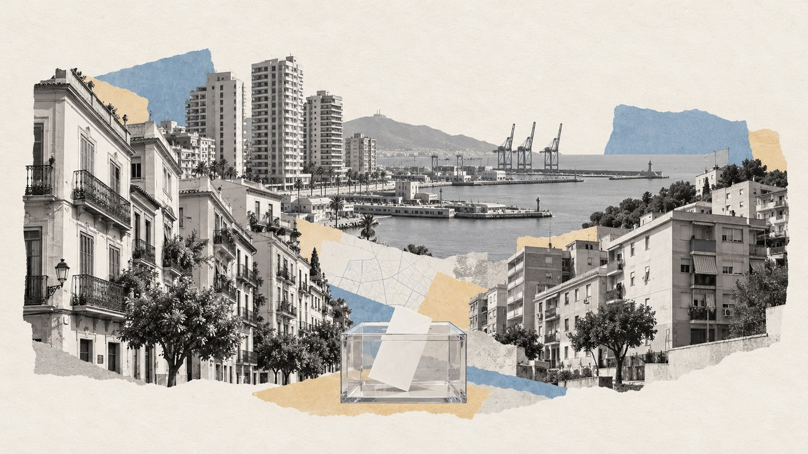

Inicio › Municipios › Málaga › Málaga
Barrio de Málaga · distrito Palma-Palmilla · Generales 2004-2023
Elecciones en La Roca
Cómo vota este barrio de Málaga, quién vive en él y en qué se separa del resto de la ciudad
Por Nacho G. del Álamo · Actualizado el

DatoEn La Roca, en el distrito de Palma-Palmilla, el PP fue la fuerza más votada en las elecciones generales del 23 de julio de 2023, con el 37,8 % del voto válido, por delante del PSOE (31,6 %). Votó el 73,7 % de sus 2.415 electores, 6,3 puntos más que el conjunto de Málaga (67,4 %): es el 9.º de los 46 barrios de la ciudad con más participación.
DatoViven en La Roca 2.841 personas (padrón de 2023), con una edad media de 48,4 años (42,9 en Málaga). El 5,0 % tiene nacionalidad extranjera, frente al 10,4 % de la ciudad. Según el censo de 2021, el 32,2 % de los adultos tiene estudios superiores (31,1 % en la ciudad) y la tasa de paro era del 21,0 % (25,3 %).
DatoLa renta neta media por unidad de consumo es de 21.279 € al año (20.720 € en Málaga): el 10.º barrio con más renta de los 46 de la ciudad. El 15,6 % de la población vive por debajo del umbral de pobreza relativa (menos del 60 % de la renta mediana).
Ver La Roca calle a calle en el mapa de Málaga
Sección a sección
DatoLa Roca tiene 3 secciones censales, la unidad más pequeña con resultados electorales (entre 500 y 2.500 electores cada una). En 2023 ganó el PP, en 3.
PP
| Sección | Censo | Participación | Más votado | Renta |
|---|---|---|---|---|
| Distrito 7, sección 30 | 1.028 | 74,5 % | ■ PP (33,3 %) | 20.713 € |
| Distrito 7, sección 75 | 687 | 72,6 % | ■ PP (38,3 %) | 21.508 € |
| Distrito 7, sección 88 | 700 | 73,7 % | ■ PP (44,0 %) | 21.926 € |
Resultado de las generales de 2023
DatoVoto por partido sobre voto válido (candidaturas más blancos) en las 3 secciones de La Roca. La línea discontinua marca el resultado del conjunto de Málaga.
| Partido | Voto | Votos | Málaga |
|---|---|---|---|
| PP | 37,8 % | 665 | 37,7 % |
| PSOE | 31,6 % | 556 | 30,9 % |
| Sumar / Podemos / IU | 14,4 % | 254 | 13,4 % |
| Vox | 14,1 % | 248 | 15,1 % |
| Otros | 1,5 % | 27 | 1,9 % |
De 2004 a 2023
DatoDesde 2004, el barrio ha cambiado de partido más votado 5 veces: el PP ganó en 4, el PSOE ganó en 3, Sumar ganó en 1 de 8 elecciones. La participación ha pasado del 76,1 % en 2004 al 73,7 % en 2023.
| Elección | Participación | Más votado | PP | PSOE | Vox | Sumar / Podemos / IU | Ciudadanos | UPyD |
|---|---|---|---|---|---|---|---|---|
| 2004 | 76,1 % | PSOE | 39,7 % | 44,5 % | — | 6,5 % | — | — |
| 2008 | 76,5 % | PP | 46,0 % | 42,9 % | — | 5,2 % | 0,3 % | 1,3 % |
| 2011 | 69,6 % | PP | 48,4 % | 28,7 % | — | 10,7 % | — | 7,6 % |
| 2015 | 75,9 % | Sumar / Podemos / IU | 27,2 % | 23,0 % | 0,6 % | 27,9 % | 17,5 % | 0,7 % |
| 2016 | 71,2 % | PP | 32,5 % | 24,6 % | 0,6 % | 22,3 % | 16,1 % | 0,2 % |
| abr. 2019 | 76,8 % | PSOE | 15,1 % | 28,9 % | 14,1 % | 17,7 % | 21,2 % | — |
| nov. 2019 | 72,4 % | PSOE | 19,3 % | 28,8 % | 20,2 % | 18,5 % | 10,1 % | — |
| 2023 | 73,7 % | PP | 37,8 % | 31,6 % | 14,1 % | 14,4 % | — | — |
Con las secciones censales de 2023: los resultados de cada elección son los de las secciones que ya existían con el mismo código. Las familias agrupan a cada partido con sus antecesores y coaliciones (Podemos, IU y Sumar; Junts y CiU).
Quién vive en el barrio
| La Roca | Málaga | |
|---|---|---|
| Habitantes (2023) | 2.841 | 584.203 |
| Edad media | 48,4 | 42,9 |
| Menores de 18 años | 11,5 % | 17,0 % |
| 65 años o más | 29,0 % | 19,2 % |
| Nacionalidad extranjera | 5,0 % | 10,4 % |
| Nacidos fuera de España (2021) | 6,9 % | 12,8 % |
| Con estudios superiores (2021) | 32,2 % | 31,1 % |
| Tasa de paro (2021) | 21,0 % | 25,3 % |
| Renta neta por unidad de consumo | 21.279 € | 20.720 € |
| Renta neta por habitante | 14.443 € | 13.871 € |
| Bajo el umbral de pobreza relativa | 15,6 % | 24,7 % |
Medias de las secciones del barrio ponderadas por su población. Padrón y Atlas de Distribución de Renta de los Hogares del INE (2023); estudios, paro y lugar de nacimiento, del censo de población de 2021. La relación entre estas cifras y el voto es entre barrios, no entre personas.
Otros barrios del distrito de Palma-Palmilla
- La Palma: el PSOE, participación del 38,3 %
- Las Virreinas: el PP, participación del 68,4 %
- Martiricos: el PP, participación del 66,8 %
Más datos
- Todos los barrios de Málaga
- Barrios de las grandes ciudades de España
- Elecciones en Málaga, desde 1977
- Participación electoral por barrio en toda España
- Voto y renta por barrios en toda España
Método y fuentes
- Qué es el barrio
- Los límites de barrios y distritos son los de OpenStreetMap (© colaboradores de OpenStreetMap, licencia ODbL), que en la mayoría de ciudades copian la división oficial del ayuntamiento. Cada sección censal del INE se asigna al barrio con el que comparte más superficie; las que caen menos de la mitad dentro de un barrio no se asignan. Como las secciones no siempre siguen los límites de los barrios, alguna manzana del borde puede quedar en el barrio vecino.
- Datos
- Resultados oficiales por mesa del Ministerio del Interior (Infoelectoral) agregados por sección censal, sin el voto de los residentes en el extranjero (CERA). Renta y población: Atlas de Distribución de Renta de los Hogares y padrón del INE (2023); estudios, paro y lugar de nacimiento: censo de población de 2021.
- Cómo se calcula
- Porcentajes sobre voto válido (candidaturas más votos en blanco), sumando votos de las secciones, no promediando porcentajes. Participación: votantes entre censo. Agrupación de partidos y límites: metodología del mapa.
- Datos abiertos
- Las cifras salen de las descargas del mapa (CSV, licencia CC BY 4.0); la relación entre secciones y barrios está en data/barrios/secciones_barrio.csv.
- Autoría y revisión
- Nacho G. del Álamo. Publicado el 22 de octubre de 2026; actualizado el 26 de octubre de 2026. Política editorial · Correcciones